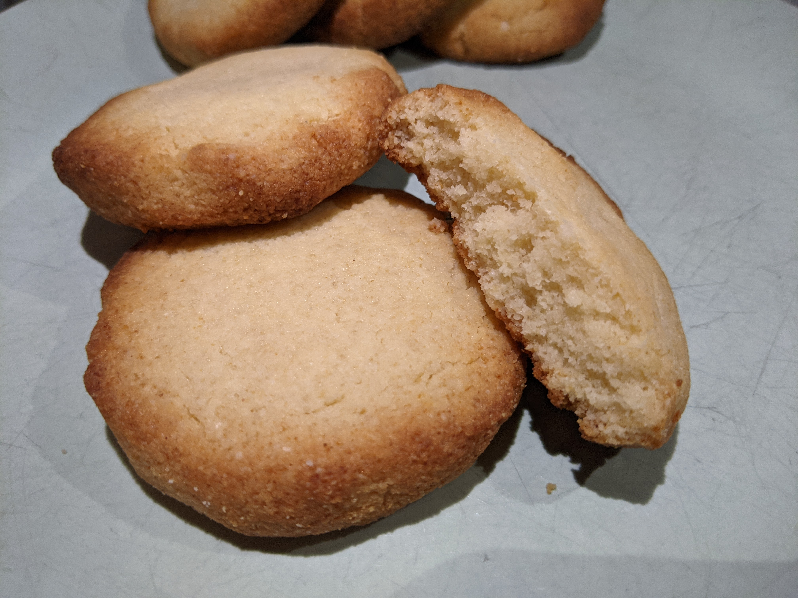

Butter Cookies

Ingredients
Dry Ingredients:
130g almond flour
30g coconut flour
90g swerve
1 tsp baking powder
pinch salt
Wet Ingredients:
78g butter
splash vanilla
Instructions
-
Mix dry ingredients on a bowl.
-
Add liquid ingredients and mix with hands.
-
Form 12 balls and distrubute on parchement-lined baking sheet. Press them with a fork to form cookies.
-
Cook at 350F for 11-14 minutes.
-
They'll be very soft and brittle when they come out. Let them cool for an hour and store on the fridge.
Originally seen on Keto Connect